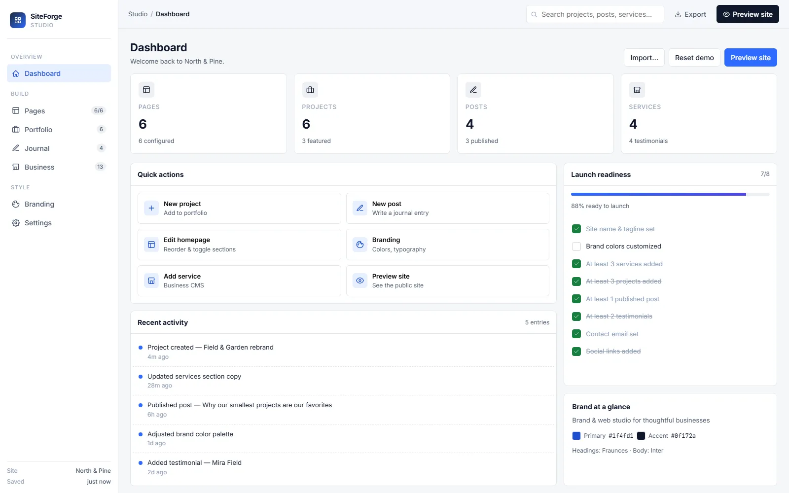

Tools Public · 2024 Own product
SiteForge Studio.
I built SiteForge for clients who didn't need a real CMS but kept getting sold one. Browser-only — everything lives in localStorage. No server, no login, no subscription. Open the tab, build, export, deploy.

The problem.
Most CMSes assume a server, a login, a billing wall, and your data on someone else's roadmap. For a one-page brochure site, that's absurd overhead. You want to build, see it, export it, and deploy it somewhere static. That's it.
What I built.
- Browser-only. Pages, services, posts, brand colors — all stored in
localStorage. Open a new tab, your work follows you on the same machine. - Live preview. Side-by-side edit + preview. WYSIWYG without the WYSIWYG fragility.
- Export to static HTML. One click → a folder of HTML/CSS/JS you can drop on any host.
- Launch-readiness checklist. Site won't let you "go live" until you've set brand colors, added at least 3 services, and configured contact details.
- Zero infrastructure. The whole product is a static page on Cloudflare. No database, no API, no auth. Forever free.
How I shipped it.
- localStorage schema first. Defined the data shape before any UI — pages, services, brand, settings.
- Editor in vanilla JS. No framework, no build step. The whole studio is <500KB.
- Export-to-static last. Built the editor before the renderer to validate the schema worked.
- Cloudflare Pages deploy. Static HTML, global CDN, zero ongoing cost.
The simplest CMS is the one with no server.
— the design constraint
Like what you read? I can ship this for you.
Send a one-line scope and I'll quote within 24h. Three engagement shapes — fixed-price MVP, embeddable widget, or maintenance retainer.